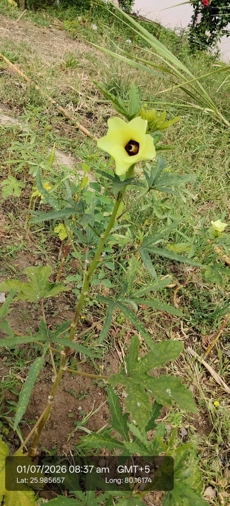

| Kingdom | Plantae |
|---|---|
| Genus | Abelmoschus |
| Species | Abelmoschus esculentus |
| Scientific name | Abelmoschus esculentus |
| Type | Annual herb |
| Category | Herbs |
Habitat & Growing Conditions
- Native to Africa but widely cultivated across India. Major summer and monsoon crop in UP, including Kanpur region
- Thrives in hot, humid tropical and subtropical climate. Optimal temperature 25-35°C
- Needs full sun - 6+ hours daily. Very sensitive to frost and cold
- Grows best in well-drained, fertile sandy-loam to clay-loam soil with pH 6.0-6.8. Needs good organic matter
- Commonly grown in kitchen gardens, fields, and commercial farms. The photo shows a field plot
- Tolerates heat and light drought once established, but regular watering gives tender pods. Avoid waterlogging

Biodiversity Value
- Large showy flowers attract bees and other pollinators, improving fruit set.
- Fast-growing and widely cultivated, it supports pollinator activity across large areas of farmland.
Economic & Ecological Importance
- Vegetable crop: One of India’s most important summer vegetables. UP is a major producer. Tender green pods used in sabzi, kurkuri bhindi, sambhar, and stir-fries
- Nutritional: Rich in dietary fiber, vitamin C, vitamin K, folate, and antioxidants. Low calorie. The mucilage aids digestion and helps control blood sugar
- Livelihood: Major cash crop for small and marginal farmers. India is the world’s largest producer of okra
- Medicinal: Used in Ayurveda for diabetes, constipation, and as a coolant. Seeds used for urinary issues. Note: Consult a healthcare professional before any medicinal use
- Industrial: Mature seeds yield edible oil. Stem fiber used for paper, rope, and textiles
- Export: Fresh and frozen okra exported from India to Middle East, Europe, and US
- Fodder: Plants after final harvest used as green fodder for cattle
Medicinal Importance
- Used in Ayurveda for diabetes management and as a coolant; mucilage is believed to help regulate blood sugar.
Visual record